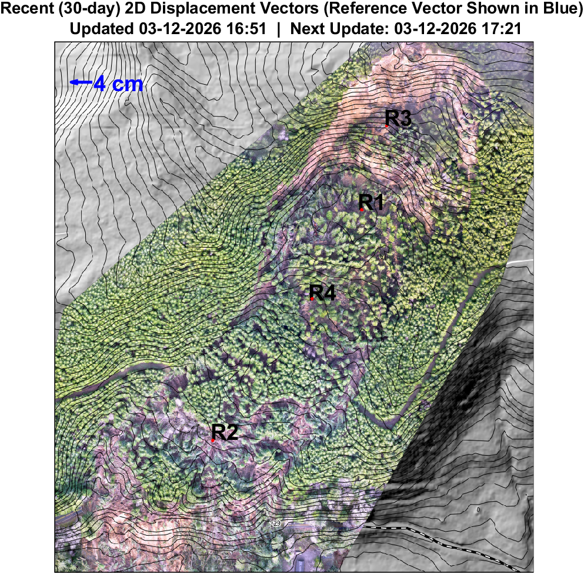
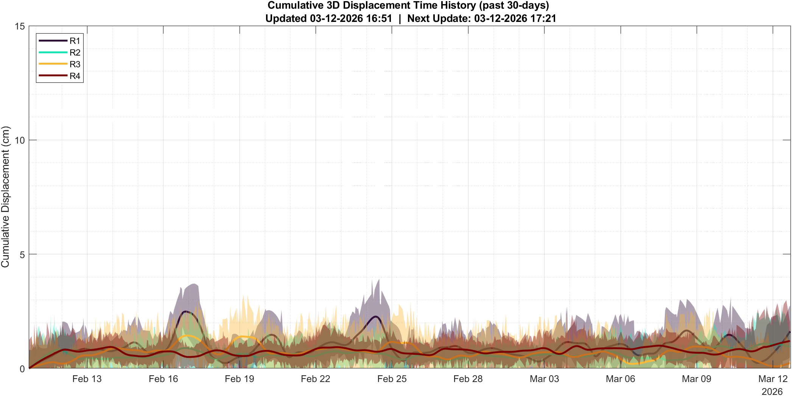
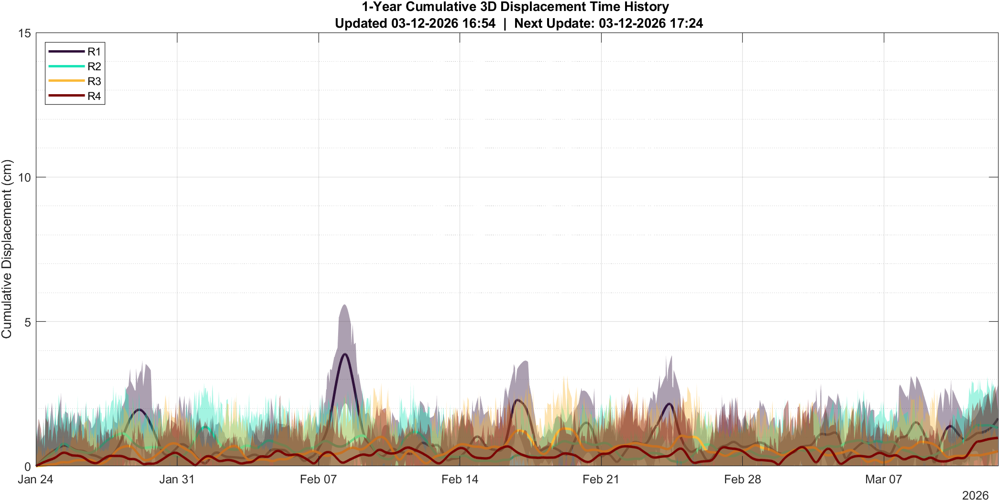
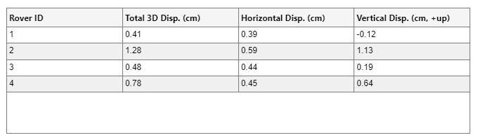

Landslide Link provides access to up-to-date displacement data for landslides monitored
by the Landslide Hazards Research Group at Oregon State University.
The information provided on this site is offered as-is and for informational purposes only. These data accompany no guarantees of accuracy, completeness, or reliability. While we strive to maintain high-quality data, we do not warrant that the information presented here is free from errors, omissions, or technical issues. Users should exercise caution and verify critical information before making decisions based on these data. For official use, detailed analysis, or confirmation of specific data, please contact our team before relying on this information for any purpose. Landslide Link and its contributors assume no liability for any loss, damage, or consequences arising from the use, interpretation, or misuse of these data.

Recent 2D displacement vectors (past 30 days). Reference vector length shown in blue.
Note: Small displacements (i.e., less than 2 cm) may produce inaccurate trajectories due to GNSS noise. Data associated with Rover 1 may accompany additional noise due to limited sky visibility. All locations are approximate.

Cumulative 3D displacement of RTK-GNSS rovers over the past 30 days. Shaded regions represent the uncertainty bounds (±1 standard deviation).
Data associated with Rover 1 may accompany additional noise due to limited sky visibility. This noise may occasionally introduce small baseline shifts and apparent offsets in the displacement data, because in this moving 30-day moving window plot, displacement is referenced to a rolling window rather than a fixed initial position. Here, the trajectory toward the end of the time series may be most useful for evaluating recent displacement behavior.
2D displacement vectors (full record). Reference vector length shown in blue.
Note: Small displacements (i.e., less than 2 cm) may produce inaccurate trajectories due to GNSS noise. Data associated with Rover 1 may accompany additional noise due to limited sky visibility. All locations are approximate.

Full cumulative 3D displacement record of RTK-GNSS rovers. Shaded regions represent the uncertainty bounds (±1 standard deviation). Data associated with Rover 1 may accompany additional noise due to limited sky visibility.

Rovers 1 & 2: first data received January 6, 2026.
Rovers 3 & 4 First data received January 15, 2026.